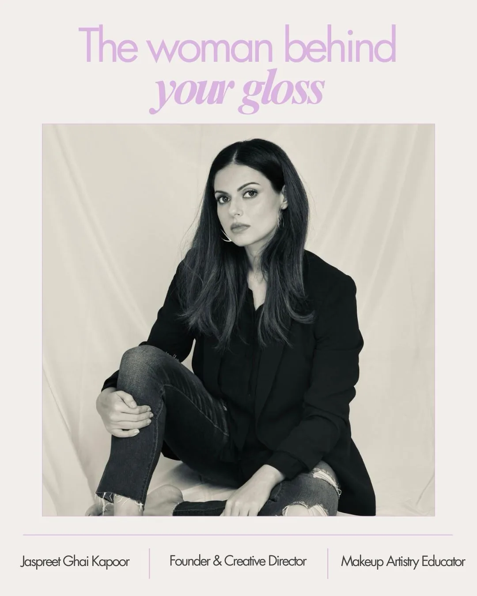

The Why Behind GLOSSKN
GLOSSKN was created from a simple observation: women's lives were becoming busier while beauty routines were becoming longer. More products. More steps. More information.
We believed there had to be a better way.
GLOSSKN is a problem-solving beauty brand creating gentle, high-performance, multi-functional products that simplify everyday routines without compromising the experience.
We don't believe in launching products simply because a category is trending. We start with a real consumer problem and ask:
Can we solve this better?
Can we remove a step?
Can we make it gentler?
Can we make it easier to live with?

The woman behind your gloss
GLOSSKN was founded by Jaspreet Ghai Kapoor, a certified beauty professional with over 12 years of industry experience. Trained in Mumbai, London and New York, she has worked with brides, models and consumers, trained beauty professionals, and served as Visiting Faculty at NIFT Delhi.
Her love for beauty began long before her career. From exploring beauty stores around the world to understanding products and formulations, curiosity became expertise. Her Hotel Management background also shaped GLOSSKN’s customer-first philosophy — because every detail matters.
Becoming a mother brought another perspective: women need beauty solutions that respect their time, skin and changing lifestyles.
Perfecting one ritual at a time.
We don't aim to build the biggest catalogue — only the most thoughtful one. Every GLOSSKN product should remove an unnecessary step, solve a real frustration, or make an everyday ritual more enjoyable.
Own Your Radiance.
We envision GLOSSKN as an Indian problem-solving beauty brand with global relevance — making beauty and self-care simpler, more thoughtful and enjoyable.
Because self-care should feel good, not overwhelming.
“If it stung even a little, we went back to the lab. We kept refining until it truly felt gentle.”
That's what Power Cleanse is all about: gentle yet effective cleansing.
Shop Power Cleanse